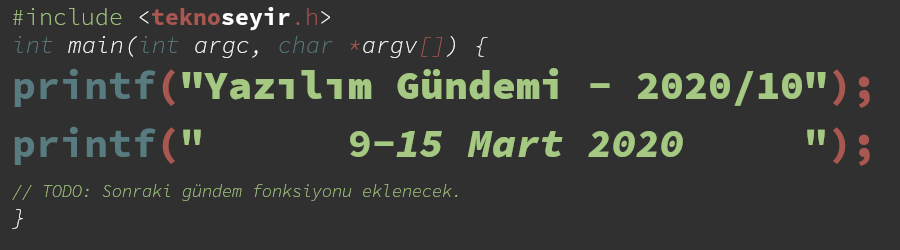
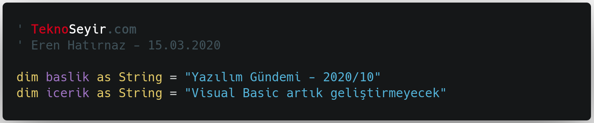
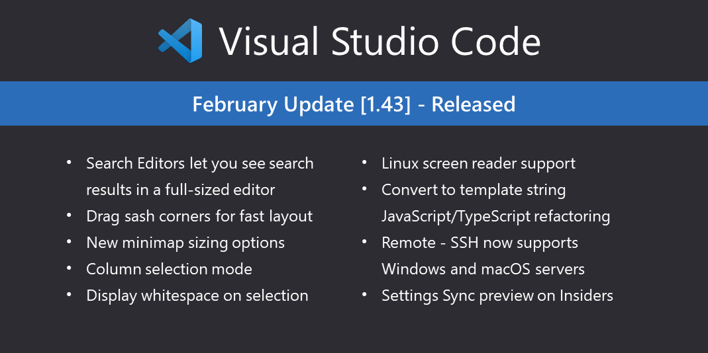

Yazılım Gündemi - 2020/10
9-15 Mart 2020
İçindekiler
- 1. Microsoft, Visual Basic'i artık geliştirmeyeceğini duyurdu
- 2. Twitter, Geliştirici Yönergelerini akademik araştırmaları daha iyi desteklemek için güncelledi
- 3. Bootstrap 5 ile gelecek bazı özellikler belli oldu
- 4. Django yönetim şeklini değiştirdi
- 5. Unicode 13.0.0 sürümü yayınlandı
- 6. Next.js kütüphanesinin 9.3 sürümü yayınlandı
- 7. Visual Studio Code Şubat 2020 (v1.43) sürümü yayınlandı
- 8. Diğer Haberler
- 9. Lisans

< Önceki Gündem | 9-15 Mart 2020 | Sonraki Gündem >
1 Microsoft, Visual Basic'i artık geliştirmeyeceğini duyurdu

Microsoft'un açık kaynak camiasına açılmasıyla birlikte gelen köklü değişikliklerden biri olan .NET Core projesinin artık Microsoft'un ana uygulama geliştirme çatısı haline geldiğini biliyoruz. Geçtiğimiz yazılım gündemi yazılarında da (bkz: Yazılım Gündemi - 14) .NET Framework API'lerinin .NET Core'a aktarılmasının tamamlandığını haber vermiştim. Yine başka bir yazıda ise .NET Core çatısının artık .NET 5 ismiyle hayatına devam edeceğini duyurmuştum. Bu hafta ise Microsoft .NET Takımı, Visual Basic için .NET 5 planlarını açıkladılar. .NET 5 içerisinde de Visual Basic desteği şu uygulama tipleri için olacak:
- Class Library
- Console
- Windows Forms
- WPF
- Worker Service
- ASP.NET Core Web API
Bunların dışında kalan WebForms, Workflow ya da WCF gibi uygulama tipleri ise .NET 5 sürümünde yer almayacak. Eğer bu tiplerde geliştirdiğiniz uygulamalar varsa Microsoft, .NET 5 çatısına geçirmenizi tavsiye ediyor. Eğer kurumsal müşteri iseniz de bu konuda destek veriyor.
Aynı blog yazısında duyurulan bir diğer gelişme ise, artık Visual Basic'in dil olarak geliştirilmeye devam edilmeyeceği haberi oldu. İlerleyen .NET sürümlerinde gelecek olan özellikler artık Visual Basic'e eklenmeyecek. Microsoft zaten 2017'de C# ve VB.NET'in eşit geliştirilmesini bıraktığını, C#'a ağırlık vereceğini duyurmuştu. Dolayısıyla pek de sürpriz bir gelişme değil yani. Ben de programlamaya ilgi duyduğum orta okul yıllarında biraz haşır neşir olduğum bir dildi fakat sonrasında C#'a geçmiştim ben de.
Eğer hala Visual Basic ile geliştirmeye devam ettiğiniz uygulamalar varsa sistemin durumuna göre bir tekrar gözden geçirip, yeni kararlar vermekte fayda var fakat yine de unutmayalım ki: "Çalışıyorsa dokunma" :)
2 Twitter, Geliştirici Yönergelerini akademik araştırmaları daha iyi desteklemek için güncelledi
Twitter, bu hafta içerisinde kendi platformu üzerinde uygulama geliştiren geliştiricilerin uyması gereken kuralları güncelledi. Yani Developer Policy güncellendi ve sadeleştirildi. Önceden 8 bölümden oluşan metin artık 4 bölüme inmiş durumda. Bu değişiklikle birlikte öne çıkan iki önemli konu mevcut. Birisi Twitter artık akademik araştırmalar için verilerin kullanılması ve yeniden dağıtılması konusunda daha anlayışlı, diğeri ise Twitter'ın artık "iyi" botlara sıcak bakmaya başlaması.
Twitter'daki herkese açık paylaşımlar artık ticari olmayan akademik araştırmalar için kullanılabilecek. Üstelik yenilenen policy sayesinde artık araştırmada sonuç üretmek için kullandığımız tweet'lerin ya da kullanıcıların id'lerini de çalışmamızla birlikte yeniden dağıtabiliyoruz. Böylece akran değerlendirmesi sırasında aynı tweet ve kullanıcılar kullanılarak, sizin elde ettiğiniz sonucu başkaları da elde edebilecekler.
Veri erişilebilirliğiyle ilgili bu değişikliklerin yanı sıra artık Twitter'da bot hesapları da yasal olarak oluşturabileceğiz. "Bot" hesaplardan kast ettiğim tabii ki de otomatik beğeni ya da RT yapan botlar değil. Twitter şu iki botu örnek olarak göstermiş mesela: EarthQuakesSF ve EveryColorBot. İnsanlara faydalı amaçlar için geliştirilmiş botlar olması gerekiyor. Bunu tam olarak nasıl belirleyeceklerini bilmiyorum, policy metnini okuyacak vaktim olmadı ama üstesinden geleceklerdir sanırım.
Ayrıca Twitter, uygulamalar ile ilgili bazı istatistikler de paylaştı. Twitter, Temmuz 2018'den beri bir milyondan fazla uygulamayı review etmiş ve %75'ini kabul etmiş. Ek olarak son 6 ayda 144.000 uygulama da kötü amaçlı kullanıldıkları için kaldırılmış.
3 Bootstrap 5 ile gelecek bazı özellikler belli oldu
Ben dahil birçok back-end geliştiricisinin onlarca projede imdadına yetişen arayüz sistemi Bootstrap son hızıyla geliştirilmeye devam ediyor. Henüz resmi bir açıklama olmasa da Bootstrap 5 sürümünün bahar aylarının sonlarına doğru yayınlanması bekleniyor. Bu sırada ise GitHub üzerindeki değişiklikleri incelediğimizde gördüğümüz bazı şeyler var. Bunlar şu şekilde:
- jQuery bağımlılığı kaldırıldı
- Internet Explorer 10 ve 11 desteği kaldırıldı
- SVG icon kütüphanesi eklendi
Bu üçünün dışında daha birçok değişikliğin de uygulandığını bu proje sayfasından görebilirsiniz. Internet Explorer 10 ve 11 desteğinin kaldırılmasına şaşırmadık elbette. Aslında bakarsanız jQuery desteğinin kalmasına da şaşırmadım ben. Son 3-4 yıldır VueJS ve React gibi kütüphanelerin yaygınlaşmasıyla birlikte zaten jQuery'yi çok nadir görüyorduk. Bootstrap ekibi de artık bunun farkına varmış olacak ki artık kullanmamaya karar vermişler.
Diğer değişiklikler ve özellikler için konu başlığına eklediğim bağlantıya ya da proje sayfasına göz atabilirsiniz.
4 Django yönetim şeklini değiştirdi
Belirli bir büyüklüğe ulaşan her programlama dili ve framework gibi Django'nun da artık bazı kararlar vermesi gerekiyordu ve bu hafta içerisinde yayınladıkları blog yazısıyla birlikte yönetim sistemiyle ilgili "DEP" belgesinin kabul edilmiş halini yayınladılar.
Açıkcası Django ile hiç proje geliştirmediğim için yapısına da hakim değilim fakat okuduklarımdan anladığım kadarıyla önceden bir "ana geliştirici akımı" varmış ve genelde geliştirmeler bu kişiler tarafından yapılıyor ya da dışarıdan gelen katkıları yine bu kişiler değerlendiriyormuş. Fakat artık projenin de fazlaca büyümesiyle birlikte bu süreç zorlaşmış olacak ki farklı roller getirerek görevleri ve sorumlulukları dağıtmayı tercih etmişler. Ayrıca "Techninal Board" gibi komitelerin de kurulacağını belirtmişler. Anlayacağız artık Django geliştirme süreci daha sistematik bir şekilde işleyecek.
Yeni yönetim şekliyle ilgili detaylara konu başlığına eklediğim bağlantı üzerinden ulaşabilirsiniz.
5 Unicode 13.0.0 sürümü yayınlandı
Aynı zamanda uygulamalar üzerinde kullandığımız "emoji"lerin de standardı olan Unicode standardının 13.0 sürümü yayınlandı. Bazı değişiklikler şu şekilde:
- 5.930 yeni karakter eklemesiyle birlikte artık Unicode toplam 143.856 karakter barındırıyor,
- 55 yeni "emoji" eklenmiş. Yeni emojilere bu adresten göz atabilirsiniz.
6 Next.js kütüphanesinin 9.3 sürümü yayınlandı
- Yeni nesil statik site oluşturma desteği,
- Ön-izleme modu,
- Global stillendirme için gömülü SASS desteği (
.scss), - Komponent bazında stillendirme için SASS Modül desteği (
.module.scss), - 404 sayfaları için otomatik statik optimizasyon,
- Tüm runtime sadece 32 kB,
- Toplulukla ilgili tartışmalar artık GitHub Discussions üzerinde olacak.
Özelliklerin detayları için konu başlığına eklediğim bağlantıya tıklayabilirsiniz.
7 Visual Studio Code Şubat 2020 (v1.43) sürümü yayınlandı

Şekil 3: Visual Studio Code editörünün Şubat 2020 sürümüyle birlikte gelen özellikler
8 Diğer Haberler
- Korona virüsü nedeniyle ertelenen konferanslar ve etkinlikler:
- PHPKonf İstanbul yaz aylarına ertelendi. Yeni tarihler ilerleyen haftalarda duyurulacak.
- Apple, WWDC20 etkinliğini yaz aylarına erteledi.
- Angular Turkey etkinliğini ileri bir tarihe erteledi.
- Atlassian, Syndney ofisini kapattı ve bir sonraki duyuruya kadar evden çalışma düzenine geçtiklerini duyurdu.
- Microsoft SMBv3'de kritik bir güvenlik açığı keşfedildi.
- Bill Gates, Microsoft'un yönetim kurulundan ayrıldı.
- GitHub CEO'su, sunucularının bir kısmını Folding@Home projesi için ayırdığını duyurdu.
- Netflix, kendi geliştirdiği AV1 encoder ve decoder'i açık kaynak olarak yayınladı. GitHub Deposu
- Amazon, AWS HTTP APIs hizmetini beta'dan çıkardı.
- InfoQ sitesi, JavaScript ve Web Geliştirme Trendleri 2020 raporunu yayınladı.
- Microsoft, .NET Core Uninstall Tool aracını tanıttı.
- Silverlight açık kaynak olarak geri döndü: OpenSilver.
- Google: "WebAssembly, internet proxy'lerine genişletilebilirlik kazandırıyor".
- Rust programlama dilinin 1.42.0 sürümü duyuruldu.
- GCC 9.3 sürümü yayınlandı.
- react-query v1.0.27 sürümü çıktı.
- Memcached 1.6.0 sürümü çıktı.
- Ionic CLI 6.2.1 sürümü çıktı.
9 Lisans

Yazılım Gündemi - 2020/10 yazısı Eren Hatırnaz tarafından Creative Commons Atıf-GayriTicari-AynıLisanslaPaylaş 4.0 Uluslararası Lisansı (CC BY-NC-SA 4.0) ile lisanslanmıştır.